Use the Import... button to add attributes from existing datasets quickly.
After completing this lesson, you’ll be able to:
The AttributeFilter transformer directs features by values in a chosen attribute. It is not a binary test (Yes/No) but a way to separate many values for a single attribute, for example:
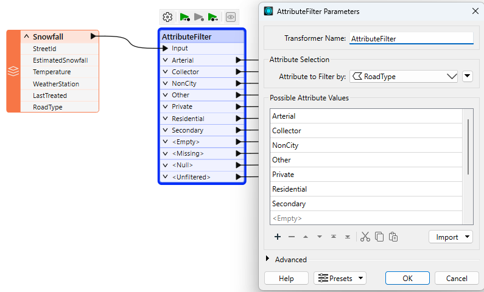
To separate this data, you would have to use seven Tester transformers, so using a single AttributeFilter saves space on the workspace canvas.
Use the Import... button to add attributes from existing datasets quickly.
In almost every scenario using multiple Tester transformers, it's possible to use a different filtering transformer to achieve the same result but using much less space on the canvas.
The AttributeFilter also works with numeric values; however, its only "operator" is to find equivalency (=), so you will rarely use it for arithmetical tests. In that scenario, the better solution is the AttributeRangeFilter.
The AttributeRangeFilter carries out the same operation as the AttributeFilter, except it can handle a range of numeric values instead of just a simple one-to-one match.
For example, we might want to separate data based on a range of snowfall values, like so:
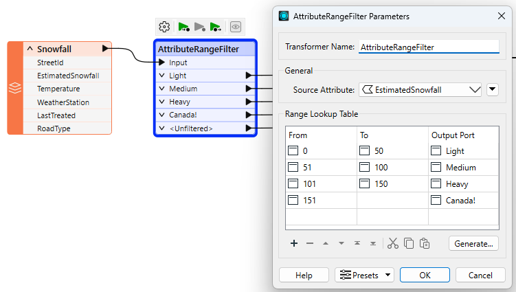
Notice that the AttributeRangeFilter parameters dialog has a Generate... button, which generates ranges automatically from a set of user-defined extents.
If the Tester, TestFilter, and AttributeFilter all filter features based on an attribute condition, then what’s the difference? When would I use each?
You can also refer to this table:| Single Test | Multiple Tests | Test Type | Operators | Attributes | ||||
| Single Clause |
Multi Clause |
Single Clause |
Multi Clause |
String | Numeric | |||
| Tester | Y | Y | – | – | Y | Y | 16 | Multiple |
| TestFilter | Y | Y | Y | Y | Y | Y | 16 | Multiple |
| AttributeFilter | Y | Y | – | – | Y | – | 1 | 1 |
| AttributeRangeFilter | Y | Y | – | – | – | Y | 6 | 1 |
Sven continues to work on his workspace. He has a few more filtering tasks to do:
Sven opens the starting workspace (C:\FMEData\Workspaces\TransformAttributes\filtering-transformers.fmw) in FME Workbench (2025.0.1 or later).
He adds an AttributeRangeFilter between the TestFilter and writer feature type:
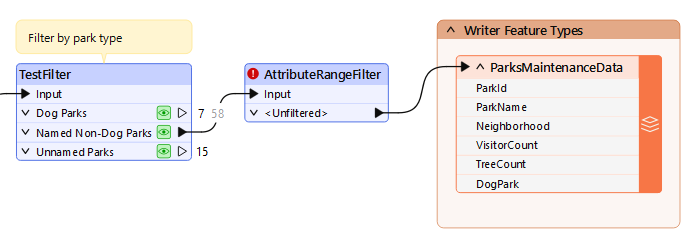
He double-clicks it to open its parameters.
He configures it to use a Source Attribute of VisitorCount:
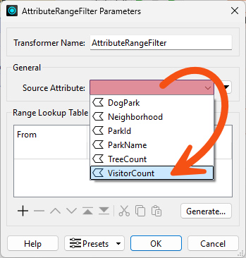
Then he uses the table to configure the ranges, setting Unpopular parks to have between 0 and 15,000 visitors and Popular parks to have between 15,001 and 100,000:

He clicks OK.
Now Sven has filtered his features into Popular, Not Popular, and Unfiltered parks. He'd like to set the value of a new Popularity attribute based on this filter.
He adds an AttributeCreator after the AttributeRangeFilter and ensures it is connected to the Popular port.
He double-clicks it to configure it.
He has it create a new attribute called Popularity and sets the value to Popular. He also sets the type to varchar(100) to ensure there are enough characters for this new attribute:
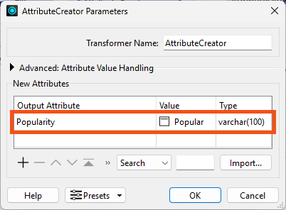
He clicks OK.
Then he copy-and-pastes the AttributeCreator.
He connects the first copy to the Not Popular port and changes it so it creates and sets Popularity to Not Popular.
While there are some scenarios where this kind of filter and then set attribute workflow is required, there's actually a more efficient way to do this operation in FME. We'll cover it next in the Use Conditional Values course.
He runs his workspace and confirms his data is being filtered properly and the value of Popularity is being set:
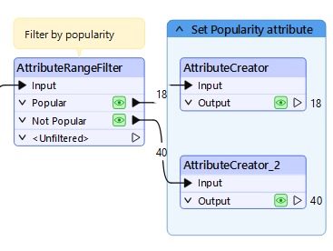
Next, Sven needs to divide his data by Neighborhood. For now, he'd like to only write data in the Downtown neighborhood. However, he suspects he might need to work with data from other neighborhoods later on, so he doesn't want to simply use a Tester to grab only the Downtown parks. Instead, he'll use an AttributeFilter to split the data into many streams based on the value of the Neighborhood attribute.
He adds an AttributeFilter before the writer feature type and ensures both AttributeCreators are connected to it:
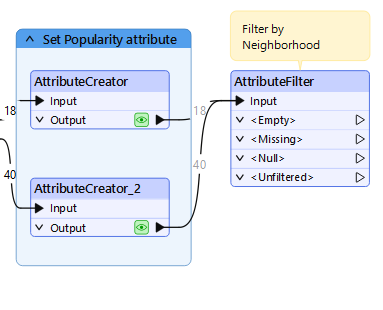
He opens the AttributeFilter to set the parameters.
He has to enter the possible values have in advance to generate the ports. However, he doesn't have to type each on in manually; instead, he can use the Import button. He clicks it and selects From Feature Cache:
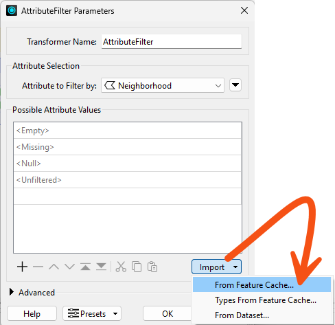
He chooses to check values in both feature caches and clicks Next:

He chooses to pull values from the Neighborhood attribute and clicks Next:
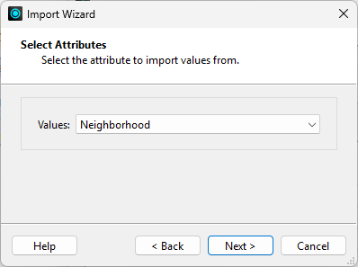
Finally, he clicks Select All to use all the values and clicks Import:
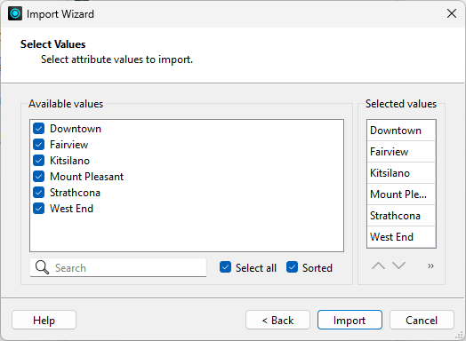
These values are added to the Possible Attribute Values list.
Sven clicks OK and the transformer ports are updated:
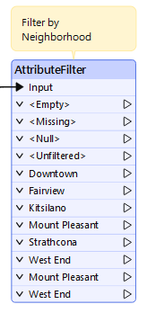
He connects the Downtown port to the writer feature type:
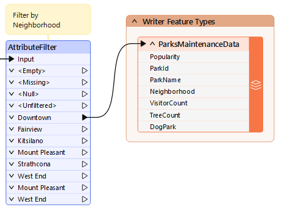
Similar to step 3, there might be a more efficient way to do this operation, depending on Sven's exact desired output. If he wanted to split the data up by Neighborhood when writing out, he could use a fanout. But for now, this procedure works well enough.
Sven runs his workspace and uses View Written Data to inspect the output.
He notes that the Popularity attribute exists and has values and the data only contains parks in the Downtown neighborhood:
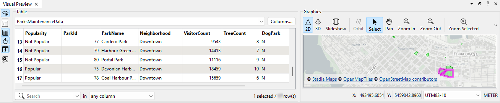
Take note of the number of Downtown features; you'll need it for the quiz.